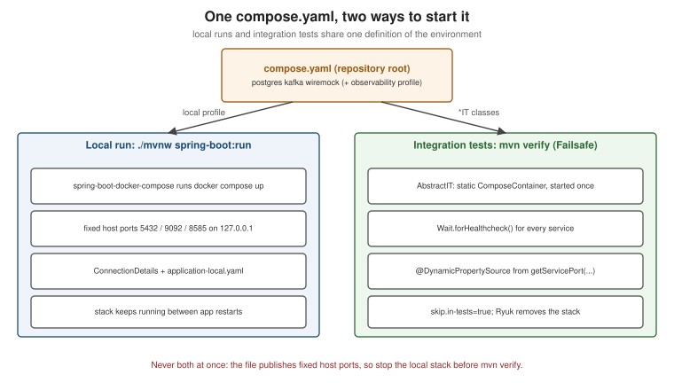

Spring Boot Integration Tests with Testcontainers (Locally and in GitHub Actions)
|
This content was generated with the assistance of AI and should be verified against the official documentation before being relied on in production. |
This page is the practical centre of the Docker section: how to write integration tests for a Spring Boot 4.1.x
service (Java 25) that run against real PostgreSQL, Kafka and a mocked downstream API in Docker, and how to run
them the same way on a laptop and in GitHub Actions. It uses Testcontainers for Java 2.0.5 (managed by Spring Boot
4.1), Docker Engine 29.8.x or Docker Desktop 4.91 or later, and the current GitHub Actions majors
(actions/checkout@v7, actions/setup-java@v6, docker/login-action@v4). The basics of @SpringBootTest with a
@Container field are on Unit and Integration Testing
and are not repeated (a Quartz-on-a-real-database variant is on
Testing Scheduled Jobs); how Testcontainers itself works is on
Testcontainers Fundamentals.
The split: *Test without Docker, *IT with Docker
The house convention keeps two kinds of tests apart by name:
-
*Test— unit and slice tests, run by Surefire in thetestphase. They never need Docker, somvn testworks on any machine, offline, in seconds. -
*IT— integration tests, run by Failsafe in theintegration-testphase and checked inverify. They start containers.
Why two plugins, the default include patterns and the JaCoCo wiring are explained on Maven Quality Plugins; this page adds the Docker side.
Dependencies
<dependency>
<groupId>org.springframework.boot</groupId>
<artifactId>spring-boot-starter-test</artifactId>
<scope>test</scope>
</dependency>
<dependency>
<groupId>org.springframework.boot</groupId>
<artifactId>spring-boot-testcontainers</artifactId>
<scope>test</scope>
</dependency>
<dependency>
<groupId>org.testcontainers</groupId>
<artifactId>testcontainers-junit-jupiter</artifactId>
<scope>test</scope>
</dependency>
<dependency>
<groupId>org.testcontainers</groupId>
<artifactId>testcontainers-postgresql</artifactId>
<scope>test</scope>
</dependency>
<dependency>
<groupId>org.testcontainers</groupId>
<artifactId>testcontainers-kafka</artifactId>
<scope>test</scope>
</dependency>
<dependency>
<groupId>org.springframework.kafka</groupId>
<artifactId>spring-kafka-test</artifactId>
<scope>test</scope>
</dependency>No versions: spring-boot-dependencies manages all of them, including the Testcontainers BOM at 2.0.5. The artifact
names are the 2.0 ones (testcontainers-junit-jupiter, testcontainers-<module>); see
the 2.0 model.
Three ways to wire containers into the application context
1. @Container with @ServiceConnection
A static @Container field annotated with @ServiceConnection is the shortest path for a single container:
Spring Boot derives the connection properties from the container type. This is the pattern already shown on
Unit
and Integration Testing and, for brokers, on
Spring Boot Testing for Messaging.
2. Containers as beans (recommended for shared containers)
Declaring containers as @Bean`s in a `@TestConfiguration lets Spring manage their lifecycle: they start before
the beans that depend on them, stop after them, and — because Spring’s test context cache reuses a context across
test classes with the same configuration — are shared by every test class that imports the configuration.
package com.example.orders;
import org.springframework.boot.test.context.TestConfiguration;
import org.springframework.boot.testcontainers.service.connection.ServiceConnection;
import org.springframework.context.annotation.Bean;
import org.testcontainers.kafka.KafkaContainer;
import org.testcontainers.postgresql.PostgreSQLContainer;
import org.testcontainers.utility.DockerImageName;
@TestConfiguration(proxyBeanMethods = false)
public class ContainersConfiguration {
@Bean
@ServiceConnection
PostgreSQLContainer postgres() {
return new PostgreSQLContainer(DockerImageName.parse("postgres:18.1"));
}
@Bean
@ServiceConnection
KafkaContainer kafka() {
return new KafkaContainer(DockerImageName.parse("apache/kafka:4.2.1"));
}
}@SpringBootTest
@Import(ContainersConfiguration.class)
class OrderRepositoryIT {
// ... tests; JDBC and Kafka connection details come from the container beans
}Derived from Spring Boot’s
Using
Spring Beans and
Service
Connections. Existing @Container declarations in an interface or class can be imported instead with
@ImportTestcontainers(MyContainers.class) on the test configuration.
3. @DynamicPropertySource and DynamicPropertyRegistrar
When no ConnectionDetails exists for a technology — a custom client’s base URL, a WireMock endpoint, a Compose
service — register the properties yourself. In a test class use a static @DynamicPropertySource method; in a
configuration class declare a DynamicPropertyRegistrar bean that receives the container, which guarantees the
container has started before the properties are read:
@Bean
DynamicPropertyRegistrar paymentsProperties(GenericContainer<?> wiremock) {
return registry -> registry.add("clients.payments.base-url",
() -> "http://%s:%d".formatted(wiremock.getHost(), wiremock.getMappedPort(8080)));
}Derived from Dynamic Properties.
The connection-details table
Spring Boot recognises these containers for @ServiceConnection (Spring Boot 4.1; abbreviated):
| Connection details | Container |
|---|---|
|
Any |
|
|
|
|
|
|
|
The corresponding module containers |
|
|
|
|
The complete table is in
Service
Connections. A GenericContainer on an image with a different name can still be matched with
@ServiceConnection(name = "redis").
The house harness: one compose.yaml for everything
The repository’s convention (generated by .claude/skills/iru-setup-java-springboot-testcontainers) goes one step
further: the integration tests start the same compose.yaml that developers run locally (see
Compose for Local Development), through a Testcontainers
ComposeContainer in one abstract base class. Local runs and CI then cannot drift apart: a service, version or
healthcheck changed for development is exactly what the tests use.

The rules of the harness:
-
One
ComposeContainer, started once per JVM — astatic finalfield started in a static initializer (the singleton pattern), not per test class. Restarting Kafka and PostgreSQL per class makes the suite unusably slow. Tests therefore share state: each*ITcleans up what it creates or uses unique keys. -
Real wait strategies —
Wait.forHealthcheck()for every service, which is why every service in the file has ahealthcheck.Wait.forListeningPort()alone lets tests run against a database that is still initialising. -
Mapped ports through
@DynamicPropertySource—ComposeContainerexposes services through random ports; every property is built fromgetServiceHost/getServicePort, never from a fixed port. -
spring.docker.compose.skip.in-tests=true— Spring Boot’s own Compose support must not start a second copy of the stack during tests. It is the Spring Boot 4.1 default; the houseapplication-local.yamlsets it explicitly anyway. -
The compose file path is module-relative — Failsafe runs with the module directory as the working directory, so
new File("compose.yaml")is wrong in a multi-module build. The base class below walks up fromuser.dirto the directory that containscompose.yaml, so it works from any module depth. -
Narrow per-adapter bases — an adapter module that needs only PostgreSQL uses containers as beans (option 2) instead of the full stack; the Compose harness is for full-context tests in the
bootmodule.
Downstream APIs: WireMock or Microcks
Integration tests must never call a real downstream service. The house stack contains a WireMock container whose
mappings (under wiremock/mappings/) are generated from the client’s OpenAPI contract; Microcks is the alternative
when gRPC or GraphQL clients exist, because it mocks REST, gRPC and GraphQL from the same contracts. Both are just
Compose services here; for per-adapter tests their Testcontainers modules
(org.wiremock.integrations.testcontainers:wiremock-testcontainers-module,
io.github.microcks:microcks-testcontainers) start a single mock in seconds.
Testcontainers at development time
The same container configuration can also back a local run, without Compose: a TestOrdersApplication in
src/test/java launches the real application with the test configuration attached:
package com.example.orders;
import org.springframework.boot.SpringApplication;
public class TestOrdersApplication {
public static void main(String[] args) {
SpringApplication.from(OrdersApplication::main)
.with(ContainersConfiguration.class)
.run(args);
}
}Run it from the IDE or with ./mvnw spring-boot:test-run. Annotating container beans with @RestartScope keeps
them alive across DevTools restarts. Derived from
Testcontainers
Support (development-time services). The house setup prefers Compose for local runs, but this is a good fit for
services without a compose.yaml.
Running the tests locally
docker info > /dev/null && echo "Docker is running" # Docker Desktop or Docker Engine must be up
./mvnw test # unit tests only -- no Docker needed
./mvnw verify # unit tests, then Failsafe runs the *IT classes against containers
./mvnw verify -DskipITs # everything except the integration tests
./mvnw verify -Dit.test=OrderIT # a single integration test class
docker compose down # stop a running local dev stack first: it holds the same host portsDerived from the Maven Failsafe plugin documentation and Docker’s Run your Java tests guide.
Faster local iterations: turn on reuse mode for single containers (testcontainers.reuse.enable=true in
~/.testcontainers.properties plus .withReuse(true)), which keeps them running between runs (see
Reuse mode). It must stay off in CI.
Troubleshooting:
| Symptom | Fix |
|---|---|
|
Start Docker Desktop, or point |
Ryuk fails to start ( |
Typical of rootless Podman or restricted sockets: set |
Colima or Podman: containers start but connections time out |
Set |
Apple silicon: |
The image is |
|
The local dev stack is still running — |
Running the tests in GitHub Actions
GitHub-hosted ubuntu-latest runners ship Docker Engine and the Compose plugin, so the same mvn verify works in
CI with no extra setup. The house build.yml:
# .github/workflows/build.yml
name: build
on:
push:
branches: [main, develop]
pull_request:
permissions:
contents: read
jobs:
build:
runs-on: ubuntu-latest
timeout-minutes: 30
steps:
- name: Check out
uses: actions/checkout@v7
- name: Set up JDK 25
uses: actions/setup-java@v6
with:
distribution: temurin
java-version: '25'
cache: maven
- name: Log in to Docker Hub (authenticated pulls avoid the anonymous rate limit)
if: ${{ vars.DOCKERHUB_USERNAME != '' }}
uses: docker/login-action@v4
with:
username: ${{ vars.DOCKERHUB_USERNAME }}
password: ${{ secrets.DOCKERHUB_TOKEN }}
- name: Build, unit tests (Surefire) and integration tests (Failsafe)
run: mvn -B -ntp clean verify
- name: Upload test reports
if: failure()
uses: actions/upload-artifact@v7
with:
name: test-reports
path: |
**/target/surefire-reports/**
**/target/failsafe-reports/**Derived from the READMEs of actions/checkout,
actions/setup-java, docker/login-action
and actions/upload-artifact, Docker’s
Java guide, and Testcontainers'
Patterns for
running tests inside a Docker container. The workflow shape (ubuntu-latest, mvn -B -ntp clean verify, reports
on failure) matches .claude/skills/iru-setup-java-springboot-github-workflows; the action majors are the current
ones.
Docker Hub rate limits in CI
GitHub-hosted runners share IP addresses, so anonymous pulls quickly hit Docker Hub’s limit of 100 pulls per 6 hours
per address. docker/login-action with a Docker Hub access token (stored as the DOCKERHUB_TOKEN secret) raises
the allowance — Testcontainers reads the credentials it writes to ~/.docker/config.json. Alternatives: mirror the
images into GHCR and reference them there, or set TESTCONTAINERS_HUB_IMAGE_NAME_PREFIX to a pull-through mirror
(see Registries and
Docker Hub).
services: job containers — and why they are worse here
GitHub Actions can start containers next to a job:
services:
postgres:
image: postgres:18.1
env:
POSTGRES_DB: orders
POSTGRES_USER: orders
POSTGRES_PASSWORD: orders-dev-only # development-only
ports:
- 5432:5432
options: >-
--health-cmd "pg_isready -U orders -d orders"
--health-interval 5s --health-timeout 3s --health-retries 20This works, but compared with Testcontainers it has fixed ports, a configuration that exists only in CI (local runs
need a different setup), no wait strategies beyond Docker health checks, no per-test lifecycle, and no parity with
the compose.yaml developers use. Keep Testcontainers; use services: only for tests that cannot start Docker
containers themselves. Derived from GitHub’s
Communicating
with Docker service containers and
Creating
PostgreSQL service containers.
container: jobs and Docker-in-Docker
Running the whole job inside a container (jobs.<id>.container) changes the picture: Testcontainers then needs the
host’s Docker socket mounted into the job container and must reach sibling containers through the Docker network
rather than localhost. Testcontainers documents the "Docker wormhole" pattern (mount /var/run/docker.sock) and
advises against true Docker-in-Docker. On GitHub-hosted runners, simply do not use container: for jobs that run
Testcontainers. See GitHub’s
Running
jobs in a container and Testcontainers'
DinD patterns.
Capacity, timeouts and parallelism
-
A standard GitHub-hosted
ubuntu-latestrunner has 4 vCPUs and 16 GB of RAM for public repositories and 2 vCPUs and 8 GB for private ones (14 GB of SSD either way); PostgreSQL, Kafka and WireMock fit comfortably. Larger stacks (Elasticsearch, Couchbase) may need larger runners or Testcontainers Cloud. -
Set
timeout-minuteson the job andwithStartupTimeouton the harness, so a stuck pull fails fast. -
Maven
-T 1Cparallelises modules; FailsafeforkCountparallelises test JVMs. The Compose harness publishes the fixed host ports declared incompose.yaml, so two forks would collide — keepforkCountat 1 for Compose-based `*IT`s and parallelise by module instead. Containers-as-beans tests use random ports and can run in parallel forks. -
Broker-specific CI concerns (topic creation, Awaitility timeouts) are covered in Spring Boot Testing for Messaging.
Derived from GitHub’s GitHub-hosted runners and the runner images repository.
A complete worked example
The five pieces below belong together: the same service names (postgres, kafka, wiremock), container ports
(5432, 9092, 8080) and property names appear in each.
compose.yaml (repository root)
# compose.yaml -- local development and integration tests. Development-only credentials.
name: orders
services:
postgres:
image: postgres:18.1
environment:
POSTGRES_DB: orders
POSTGRES_USER: orders
POSTGRES_PASSWORD: orders-dev-only # development-only
ports:
- "127.0.0.1:5432:5432"
healthcheck:
test: ["CMD-SHELL", "pg_isready -U orders -d orders"]
interval: 5s
timeout: 3s
retries: 20
kafka:
image: apache/kafka:4.2.1
ports:
- "127.0.0.1:9092:9092"
environment:
KAFKA_NODE_ID: 1
KAFKA_PROCESS_ROLES: broker,controller
KAFKA_LISTENERS: CONTROLLER://:29093,PLAINTEXT_HOST://:9092,PLAINTEXT://:19092
KAFKA_ADVERTISED_LISTENERS: PLAINTEXT_HOST://localhost:9092,PLAINTEXT://kafka:19092
KAFKA_LISTENER_SECURITY_PROTOCOL_MAP: CONTROLLER:PLAINTEXT,PLAINTEXT:PLAINTEXT,PLAINTEXT_HOST:PLAINTEXT
KAFKA_CONTROLLER_LISTENER_NAMES: CONTROLLER
KAFKA_CONTROLLER_QUORUM_VOTERS: 1@kafka:29093
KAFKA_INTER_BROKER_LISTENER_NAME: PLAINTEXT
KAFKA_OFFSETS_TOPIC_REPLICATION_FACTOR: 1
KAFKA_TRANSACTION_STATE_LOG_REPLICATION_FACTOR: 1
KAFKA_TRANSACTION_STATE_LOG_MIN_ISR: 1
KAFKA_SHARE_COORDINATOR_STATE_TOPIC_REPLICATION_FACTOR: 1
KAFKA_SHARE_COORDINATOR_STATE_TOPIC_MIN_ISR: 1
KAFKA_GROUP_INITIAL_REBALANCE_DELAY_MS: 0
healthcheck:
test: ["CMD-SHELL", "/opt/kafka/bin/kafka-broker-api-versions.sh --bootstrap-server localhost:9092 > /dev/null"]
interval: 10s
timeout: 10s
retries: 20
wiremock:
image: wiremock/wiremock:3.13.2
command: ["--global-response-templating", "--disable-banner"]
ports:
- "127.0.0.1:8585:8080"
volumes:
- ./wiremock:/home/wiremock:ro
healthcheck:
test: ["CMD", "curl", "-fsS", "http://localhost:8080/__admin/health"]
interval: 5s
timeout: 3s
retries: 20
labels:
org.springframework.boot.ignore: "true"Kafka advertises localhost:9092 to clients on the host, so after the bootstrap connection through Testcontainers'
mapped port, the Kafka client continues on the published 127.0.0.1:9092 — one more reason the local stack must be
down during mvn verify. The WireMock mapping the test relies on:
{
"request": { "method": "POST", "urlPath": "/payments/authorizations" },
"response": {
"status": 201,
"headers": { "Content-Type": "application/json" },
"jsonBody": { "authorizationId": "auth-{{randomValue length=8 type='ALPHANUMERIC'}}", "status": "AUTHORIZED" }
}
}(saved as wiremock/mappings/payments-authorize.json; generated from the payments contract in the house setup).
AbstractIT (test sources of the boot module)
package com.example.orders;
import java.io.File;
import java.nio.file.Files;
import java.nio.file.Path;
import java.time.Duration;
import org.springframework.boot.test.context.SpringBootTest;
import org.springframework.test.context.ActiveProfiles;
import org.springframework.test.context.DynamicPropertyRegistry;
import org.springframework.test.context.DynamicPropertySource;
import org.testcontainers.containers.ComposeContainer;
import org.testcontainers.containers.wait.strategy.Wait;
import org.testcontainers.utility.DockerImageName;
@SpringBootTest(webEnvironment = SpringBootTest.WebEnvironment.RANDOM_PORT)
@ActiveProfiles("it")
public abstract class AbstractIT {
/** The same compose.yaml a developer runs locally: one definition, no drift. Started once per JVM. */
protected static final ComposeContainer ENVIRONMENT = new ComposeContainer(
DockerImageName.parse("docker:29.8.1-cli"), composeFile())
.withCopyFilesInContainer("wiremock") // only compose.yaml and the bind-mounted mappings, not the whole root
.withExposedService("postgres", 5432, Wait.forHealthcheck())
.withExposedService("kafka", 9092, Wait.forHealthcheck())
.withExposedService("wiremock", 8080, Wait.forHealthcheck())
.withStartupTimeout(Duration.ofMinutes(3));
static {
ENVIRONMENT.start(); // Ryuk removes the stack when the JVM exits
}
@DynamicPropertySource
static void environmentProperties(DynamicPropertyRegistry registry) {
registry.add("spring.datasource.url", () -> "jdbc:postgresql://%s:%d/orders".formatted(
ENVIRONMENT.getServiceHost("postgres", 5432), ENVIRONMENT.getServicePort("postgres", 5432)));
registry.add("spring.datasource.username", () -> "orders");
registry.add("spring.datasource.password", AbstractIT::composeDatabasePassword);
registry.add("spring.kafka.bootstrap-servers", () -> "%s:%d".formatted(
ENVIRONMENT.getServiceHost("kafka", 9092), ENVIRONMENT.getServicePort("kafka", 9092)));
registry.add("clients.payments.base-url", () -> "http://%s:%d".formatted(
ENVIRONMENT.getServiceHost("wiremock", 8080), ENVIRONMENT.getServicePort("wiremock", 8080)));
}
/** The development-only value from compose.yaml, kept in one place. */
private static String composeDatabasePassword() {
return "orders-dev-only";
}
/** Failsafe runs in the module directory; walk up to the directory that holds compose.yaml. */
private static File composeFile() {
for (Path dir = Path.of(System.getProperty("user.dir")).toAbsolutePath(); dir != null; dir = dir.getParent()) {
Path candidate = dir.resolve("compose.yaml");
if (Files.isRegularFile(candidate)) {
return candidate.toFile();
}
}
throw new IllegalStateException("compose.yaml not found above " + System.getProperty("user.dir"));
}
}The containerised (DockerImageName, File…) constructor copies every file in the directory holding
compose.yaml — here the repository root, with .git, target/ and the rest — into the container that runs
docker compose, unless withCopyFilesInContainer(…) names what to copy instead: the Compose file itself is
always copied, and the listed paths (resolved relative to it) are the ./wiremock directory the wiremock service
bind-mounts. Derived from the Build
Working Directory section of the Docker Compose Module page.
src/test/resources/application-it.yaml keeps Spring Boot’s own Compose support out of the way:
spring:
docker:
compose:
skip:
in-tests: trueOrderIT
package com.example.orders;
import static org.assertj.core.api.Assertions.assertThat;
import java.time.Duration;
import org.apache.kafka.clients.consumer.ConsumerRecord;
import org.junit.jupiter.api.Test;
import org.springframework.beans.factory.annotation.Autowired;
import org.springframework.beans.factory.annotation.Value;
import org.springframework.boot.test.web.server.LocalServerPort;
import org.springframework.http.HttpStatus;
import org.springframework.http.MediaType;
import org.springframework.jdbc.core.simple.JdbcClient;
import org.springframework.kafka.test.utils.KafkaTestUtils;
import org.springframework.web.client.RestClient;
class OrderIT extends AbstractIT {
@LocalServerPort
int port;
@Value("${spring.kafka.bootstrap-servers}")
String bootstrapServers;
@Autowired
JdbcClient jdbc;
@Test
void placingAnOrderAuthorizesPaymentStoresItAndPublishesAnEvent() {
var response = RestClient.create("http://localhost:" + port)
.post().uri("/orders")
.contentType(MediaType.APPLICATION_JSON)
.body("""
{"customerId": "c-%s", "amount": 42.50}
""".formatted(System.nanoTime())) // unique key: the stack is shared
.retrieve()
.toEntity(String.class);
assertThat(response.getStatusCode()).isEqualTo(HttpStatus.CREATED);
String orderId = response.getHeaders().getLocation().getPath().replace("/orders/", "");
String status = jdbc.sql("select status from orders where id = ?")
.param(orderId)
.query(String.class)
.single();
assertThat(status).isEqualTo("PAYMENT_AUTHORIZED"); // WireMock answered AUTHORIZED
ConsumerRecord<?, ?> event = KafkaTestUtils.getOneRecord(
bootstrapServers, "order-it-" + orderId, "orders.placed", 0, false, true, Duration.ofSeconds(30));
assertThat(event.key()).hasToString(orderId);
}
}The endpoint, table and topic (POST /orders, orders, orders.placed) stand for the service’s own; everything
Docker-related is complete as shown. Derived from Spring Boot’s
Dynamic
Properties, Testcontainers'
Docker Compose Module and Docker’s
Testing a Spring Boot REST API with
Testcontainers guide.
Failsafe in pom.xml
With spring-boot-starter-parent, Failsafe’s version, its integration-test/verify executions and its
classesDirectory (so tests run against the classes, not the repackaged jar) are already managed; declaring the
plugin activates it, and the only house addition is the fork count. The explicit <executions> block below is what
a build without the starter parent needs:
<plugin>
<groupId>org.apache.maven.plugins</groupId>
<artifactId>maven-failsafe-plugin</artifactId>
<executions>
<execution>
<goals>
<goal>integration-test</goal>
<goal>verify</goal>
</goals>
</execution>
</executions>
<configuration>
<forkCount>1</forkCount> <!-- one JVM: the Compose harness publishes fixed host ports -->
</configuration>
</plugin>Failsafe’s default includes (/IT*.java, /IT.java, */*ITCase.java) pick up OrderIT; the Surefire
exclusion and JaCoCo integration are on Maven Quality Plugins.
Derived from the Failsafe usage page and
Using the Parent POM.
.github/workflows/build.yml
Exactly the workflow shown under Running the tests in GitHub Actions: check
out, Temurin 25 with the Maven cache, an optional authenticated Docker Hub login, mvn -B -ntp clean verify, and the
Surefire/Failsafe reports uploaded when something fails. Nothing Docker-specific needs installing on
ubuntu-latest.